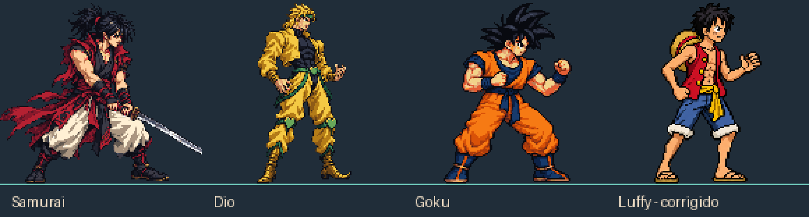
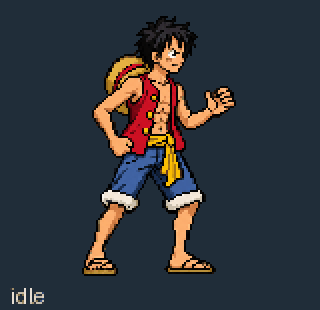

Antes e depois, ampliados em 3×

Pré-timeskip, Enies Lobby. O sprite tem 130 pixels de altura em uma célula transparente de 256 × 256, com pivô em (128, 224).
Polimento da pose de combate e do rosto. A escala e o pivô são iguais nas duas versões.
Baixar o sprite corrigido · Baixar o sprite anterior

Reproduza em câmera lenta, inspecione os ticks e espelhe o golpe. Verde indica região vulnerável e vermelho indica contato ativo.
Régua a cada 50 px. Laranja marca o alcance anterior do punho ou pé e ciano marca o novo.
Pistol ↓ → · Gatling ↓ ← · Bazooka ↓ ↓. Termine com J/K/L. Use o seletor acima para reproduzir e inspecionar cada versão.
Para controlar Luffy, volte ao jogo e escolha Treinamento. Use A/D para andar, W para pular, S para agachar e Shift + direção para o dash.
